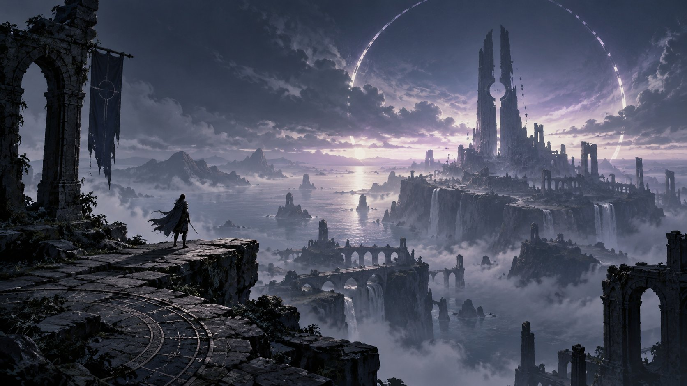
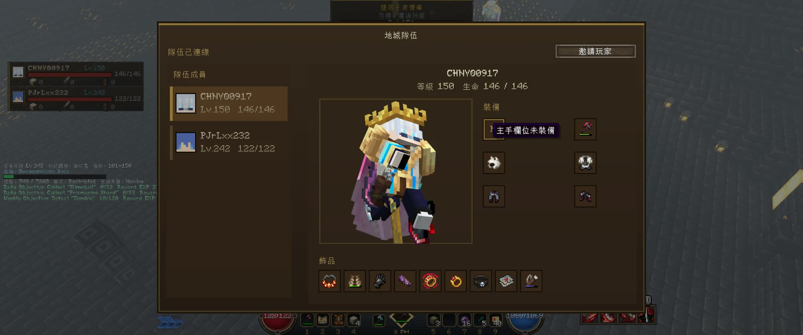
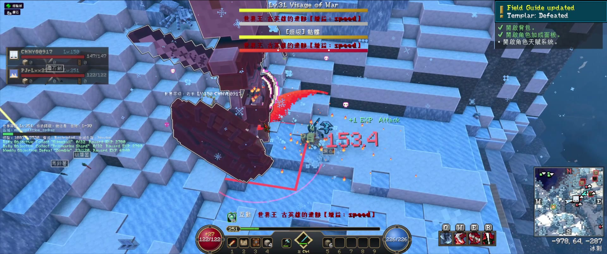

A Minecraft modpack unlike any other
A top-down ARPG, MOBA-style
The true ARPG view of Minecraft Dungeons, the Diablo series and Path of Exile, for a Minecraft that plays like nothing you have seen.
Click to move, and an immersive interface
Click where you want to go instead of walking with WASD. Richer interactions and animations put you right inside a world of fantasy.
A whole world and its lore
Its own world and story, for you to dig up and carve out yourself. A full history lets you roam the continent of Ruwado and become part of its fate.
Fight alone across this land of mysteries, or stand together with the lives left in the embers.
Features
Systems made for Savaru
More than 20 core system mods of our own make up the RPG experience only Savaru has.
Switch the view, switch the controls
Not used to it? Press F5 to switch between third and first person, and the controls switch with it.
An active community
Quick, easy ways to give feedback and reach the community, so a reported problem never sits waiting.
Character saves
Save your character and build the same one across different worlds.




Questions
I can't join the server. What now?
Check that you are on the latest test build. The pack's own server always runs the newest official test release.
Is this a Minecraft modpack?
Yes. It is a Fabric modpack for Minecraft 1.21.1.
Do I need to own Minecraft?
Yes. You need an account that owns Minecraft to play and to join the server.
Can I play solo?
Yes. The pack is built around multiplayer and community, but you can also play it in single-player.
Where can I give feedback?
Report a problem on the feedback form, or join our Discord to share your thoughts.